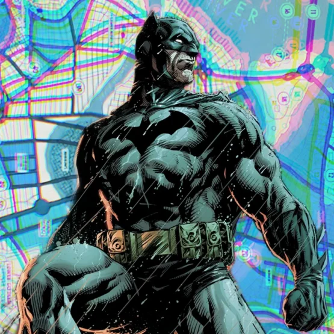
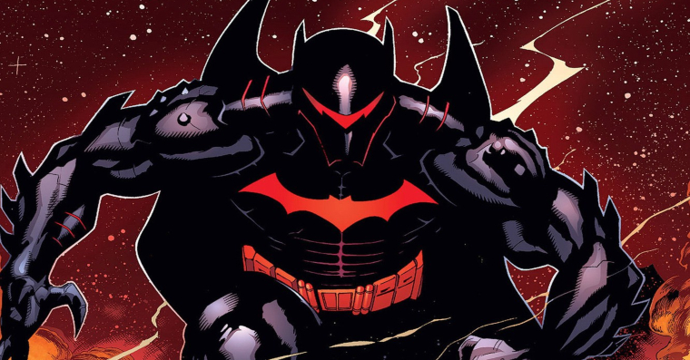
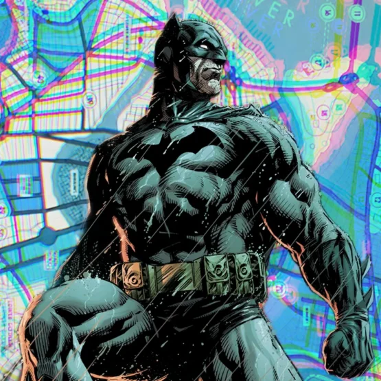
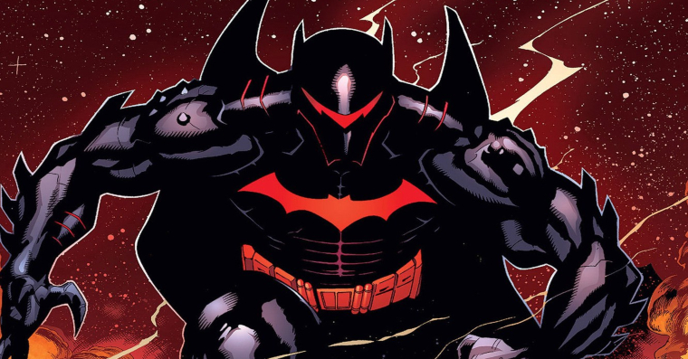

A vingança é um prato que se come frio.
-- NOTÍCIAS --
Batman Imobiliza Flash Reverso com Lâmina Ancestral
Em um desdobramento chocante que redefine os limites éticos da Liga da Justiça, o Cavaleiro das Trevas desferiu um golpe fatal — ou, ao menos, paralisante — contra Eobard Thawne, o Flash Reverso, durante um confronto violento nas profundezas da Batcaverna nesta madrugada.
Batman é atingido por toxina do pinguim e agora vive em um pombal
O que era para ser uma ronda de rotina no porto de Gotham transformou-se em um pesadelo ornitológico. O Cavaleiro das Trevas, conhecido por sua imponência e gadgets tecnológicos, foi visto pela última vez batendo asas freneticamente em direção à Torre Wayne após ser atingido por um gás experimental disparado por Oswald Cobblepot, o Pinguim.
Batman entra em confronto com vigilante quelônio em gotham
O que era para ser uma investigação de rotina sobre o tráfico de tecnologia da Wayne Enterprises nos bueiros da cidade transformou-se em um duelo de artes marciais sem precedentes. O Batman foi avistado em um combate feroz contra uma criatura descrita por testemunhas como uma "tartaruga gigante com máscara ninja" nas proximidades do Setor Industrial.